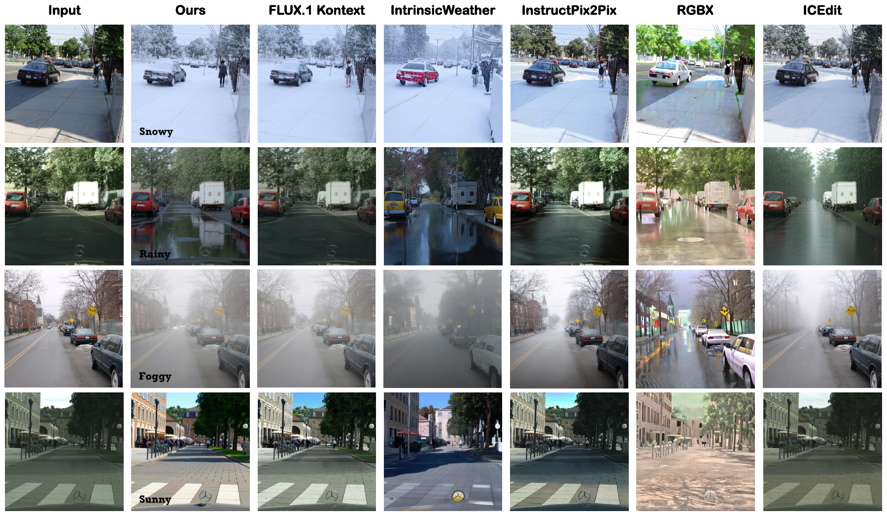

李昱辰
Yuchen Li
我是李昱辰，西安交通大学人工智能学院硕士研究生，2028 年毕业。我的研究聚焦 Diffusion、Flow Matching、可控生成与 AIGC，主要研究交通场景的天气风格迁移。 核心研究问题是：在实现多样化环境编辑的同时，关注道路结构、车辆身份与场景布局的结构保持，并致力于解决风格忽略、风格泄漏、结构漂移以及局部编辑指令与全局风格冲突等问题。同时进行目标检测等下游任务，进一步评估生成数据对真实恶劣天气感知的应用价值。
Research InterestsDiffusion Models · Flow Matching · Controllable Generation · AIGC
Research Projects
Selected work
计划投稿 TPAMI · 学生一作
Style Nursing++: Zero-Shot Compound Weather Transfer with Adaptive Style Nursing and Learned Structural Kernel
面向交通场景的零样本复合天气迁移：以自适应风格调控与可学习结构核兼顾天气外观变化和场景结构稳定性。
- Compound Weather Transfer
- Adaptive Style Nursing
- Learned Structural Kernel

SIGGRAPH Asia 转投 T-CSVT · 在投 · 学生一作
WeatherFlow: Coordinating Global Weather Style and Local Semantic Response via Velocity Projection
自动定位局部语义与全局天气轨迹的冲突，并在采样早期完成隐状态与速度校正，让天气变化落在正确区域。
- Semantic–Style Velocity Conflict
- Conflict Region Tracing
- Semantic–Style Velocity Projection

T-MM 在投 · 学生二作
PC-Weather: Region-Aware Weather Editing Along a Unified Global Trajectory
用反照率稳定材质身份，用区域指令描述道路、车辆、植被等不同响应，再在速度空间注入必要的局部变化。
- Intrinsic Anchoring
- Regional Instruction Refinement
- Region-Aware Velocity Composition

T-ITS 在投 · 已完成大修 · 等待结果 · 学生一作
MsGA-Edit: Structure-Preserving Severe Weather Editing with Multi-Source Guidance
把语义、边缘、深度与空间特征注入扩散模型的自注意力，在增强雨雪雾外观时保持道路、车辆与建筑布局。
- Structure-Aware Guidance
- Multi-source Guided Attention
- Depth-Aware Value Injection
About
目前就读于西安交通大学人工智能学院。研究兴趣集中在生成模型的结构保持、区域控制、 真实数据稀缺与下游感知价值。
- Degree
- 硕士研究生
- Graduation
- 2028
- Location
- 西安，中国